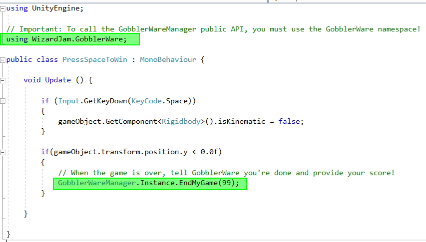

GobblerWare is a Wizard Jam community inspired "Game Anthology" system for Unity jam games. It can be used to make game collections for jam games, trash games, "WarioWare" style collections, etc.
To run the sample games, open the GobblerWareMainMenu_0.unity scene and play. Choose a game (e.g. Game 2) by clicking the button. The game will launch. When the game ends, the player will return to the GobblerWareMainMenu_0 scene and the score will be updated.
To use your own games, you need to set up the GobblerWareMenu prefab so that each button is assigned an index that corresponds to a scene index in the Build Settings.
When you're done, the menu will have GameButton_01 assigned to start the game whose main scene is at scene index 1 in the build settings.
To add more buttons for more games, simply duplicate the latest button, move it to the desired location on the UI, and assign a game's scene to it. Don't forget to add the game's scene to the build settings!
To make games compatible with the GobblerWare system, follow these steps:
That's it! Refer to the sample game scripts in the SomeGWGame and AnotherGame project sub-folders.